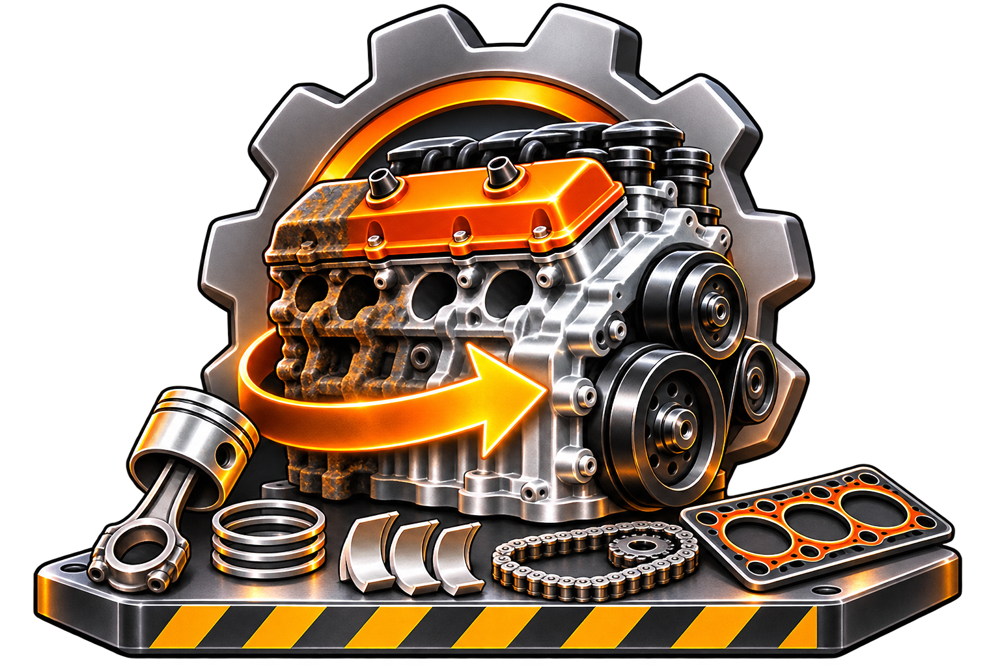
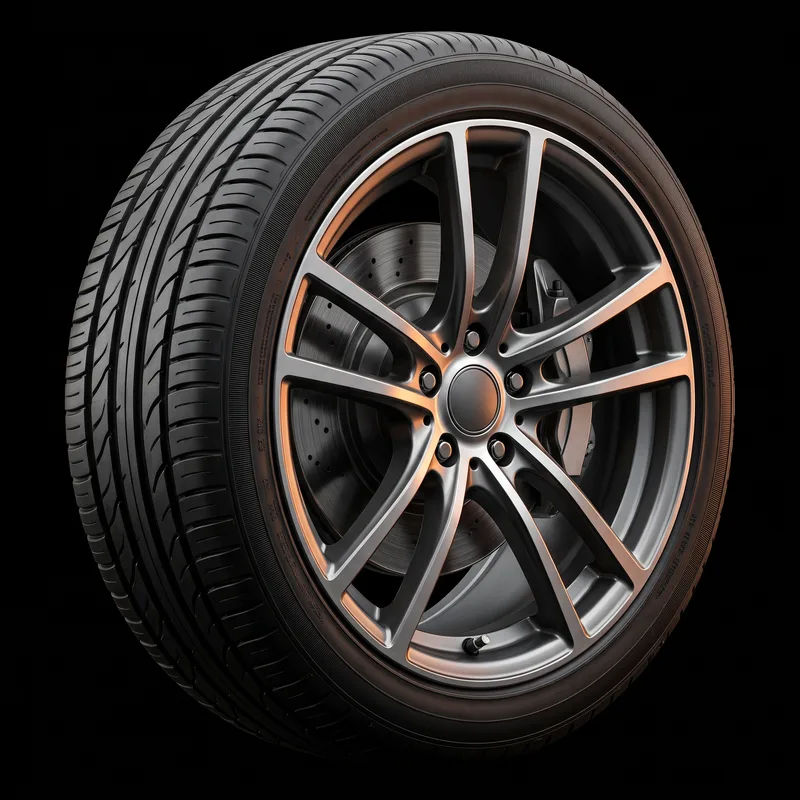

Moteur · Frotter
Atelier · Moteur commun
Glissez le doigt sur chaque tache de gras. Une tache propre laisse le métal briller.

Moteur · Serrer
Atelier · Moteur commun
Maintenez le boulon jusqu’à la zone verte, puis relâchez. Suivez l’ordre 1 → 5.
Boîte · Tourner
Atelier · Boîte commune
Faites tourner le pignon orange jusqu’à ce que ses dents s’emboîtent dans le repère vert.
Boîte · Taper
Atelier · Boîte commune
Touchez les pignons fissurés. Les pignons sains doivent rester intacts.
Pneus · Thermostat
Atelier · Pneu Route
Gardez l’aiguille dans la zone verte (60–80 °C) pendant 3 secondes. Elle dérive toute seule.

Pneus · Suivre la courbe
Atelier · Pneu Route
Partez du repère vert, puis suivez la bande tout autour du pneu sans lever le doigt.
Fin · Qualité
Moteur commun
Qualité 94% · 5 étapes · 12 fautes évitées
La récompense de secours est attribuée dès que le parcours est terminé. Les étoiles servent au défi personnel, pas à bloquer le joueur.